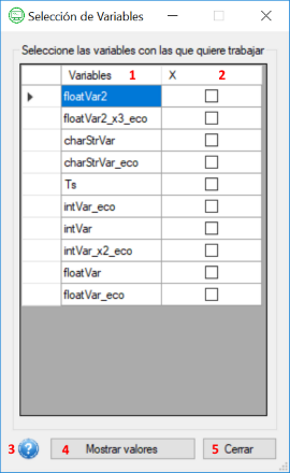
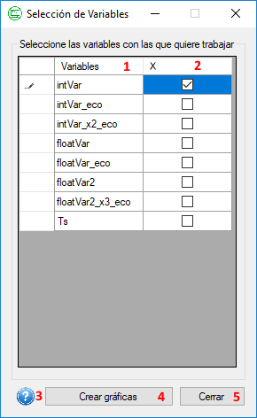
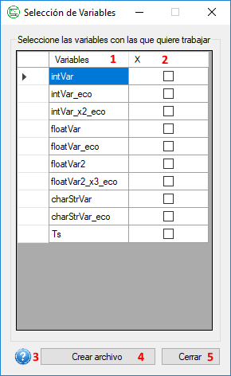

Ayuda para el Formulario Selección de Variables
A continuación se explicarán los apartados que componen el formulario de selección de variables de la aplicación Interfaz para Planta Piloto. Esta ventana puede presentarse de tres formas diferentes que se explicarán a continuación.
Formulario Selección de Variables a través del botón "Variables"
En esta ventana se seleccionarán las variables cargadas en el proyecto de las que se quieran visualizar los valores.

- Columna con los nombres de todas las variables cargadas en la configuración de la aplicación.
- Columna en la que se seleccionarán las variables que se quieren mostrar..
- botón de ayuda de la ventana.
- botón para mostrar las variables seleccionadas.
- botón para cerrar el formulario
Formulario Selección de Variables a través del botón "Gráfico"
En esta ventana se seleccionarán las variables que quieren ser graficadas en tiempo real.
Crearemos tantas gráficas como desemos siempre que pulsemos el botón "Crear Gráficas", pudiendo cambiar la selección de variables entre ellas.

- Columna con los nombres de todas las variables cargadas en la configuración de la aplicación que sean graficables (que no son cadenas de texto).
- Columna en la que se seleccionarán las variables que se quieran graficar.
- botón de ayuda de la ventana.
- botón para crear la gráfica con las variables seleccionadas.
- botón para cerrar el formulario
Formulario Selección de Variables a través del botón "Archivo"
En esta ventana se seleccionarán todas las variables que se quieran guardar en un archivo de texto.

- Columna con los nombres de todas las variables cargadas en la configuración de la aplicación.
- Columna en la que se seleccionarán las variables que se quieran guardar en un archivo.
- botón de ayuda de la ventana.
- botón para comenzar el guardado de las variables seleccionadas.
- botón para cerrar el formulario
En el momento que pulsemos el botón "Crear archivo" con alguna de las variables seleccionadas se nos abrirá
el siguiente cuadro de diálogo donde elegiremos la ruta en la que guardar el archivo de texto que contiene los valores de las variables que hemos seleccionado.
Por defecto, el nombre que se le asignará al archivo será "nombre_del_proyecto_nombre_de_cada_variable_seleccionada.txt".

Formato del archivo donde se guardarán las variables
Al abrir el archivo que acabamos de crear y en donde se guardarán los valores de las variables seleccionadas nos encontraremos:

- Fecha de creación del archivo.
- Nombre del proyecto.
- Descripción del proyecto.
- Ruta de la imagen cargada en el proyecto.
- Lista de variables que se están guardando, separadas por ';'.
- Serie de valores devueltos por la placa de las variables seleccionadas, separados por ';'.